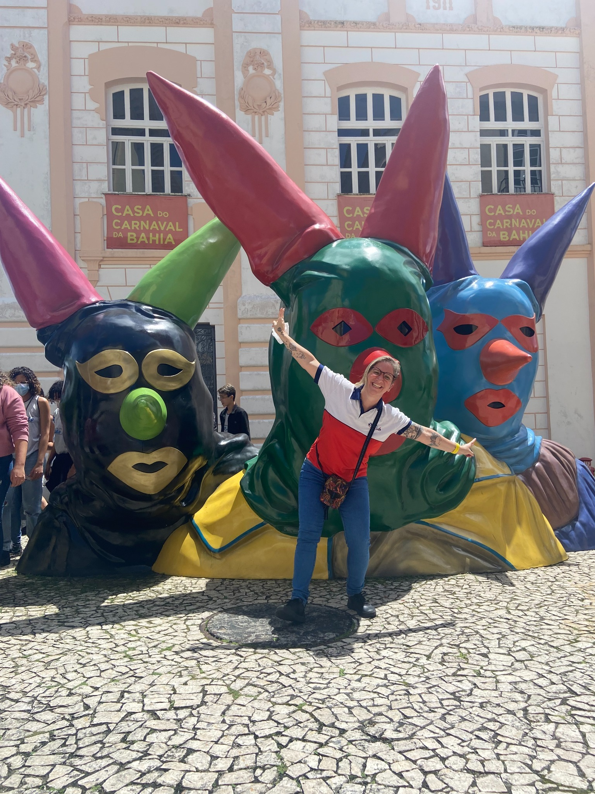

2007.1–2010
Trajetória no curso
Nara ingressou no Curso de História da UFRB em 2007.1 e concluiu a graduação em 2010. O formulário não registra outros detalhes sobre sua experiência durante a graduação, por isso esta página preserva apenas as informações efetivamente compartilhadas por ela.
Você hoje
Docência e coordenação em Muritiba

Muritiba
Escola São Luís
Atualmente, Nara atua em Muritiba como professora e coordenadora na Escola São Luís.
A fotografia registra Nara em contexto de atuação profissional atual.
Nara no Mapa das Trajetórias
Como não foram informados outros momentos pós-UFRB, o mapa apresenta por enquanto seu ponto atual em Muritiba.
Ver no mapaComo não foram informados outros momentos pós-UFRB, o mapa apresenta por enquanto seu ponto atual em Muritiba.
Um perfil construído a partir das informações e imagens compartilhadas por Nara para o Memorial.